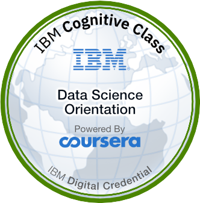

Idiomas


Olá, seja bem-vindo!
Prazer, me chamo
Alison Araújo
Analista de Dados
Analista de Dados

Me chamo Alison, sou estudante de Ciências Econômicas na Universidade Federal de São Paulo (UNIFESP). Além dos estudos, tenho como hobby a impressão 3D, uma paixão que me permite explorar a criatividade e a tecnologia de forma prática.
Sou também uma pessoa autista (nível 1), o que me dá uma perspectiva única sobre o mundo e me permite abordar problemas e desafios de maneira criativa e inovadora. A análise de dados sempre foi uma área que me fascina, e a combinação da minha formação acadêmica com minha experiência prática e minha abordagem analítica me permite oferecer uma contribuição valiosa em qualquer projeto ou organização.
Além disso, estou sempre buscando me aprofundar no estudo da estatística. Acredito que uma sólida base estatística é essencial para garantir a precisão e a relevância das análises. Além disso, a habilidade de apresentar os resultados de forma clara e eficaz é crucial para que os insights sejam compreendidos e utilizados de maneira eficiente.
Busco ter uma abordagem técnica e analítica, além de compreender profundamente os conceitos e fundamentos que envolvem os projetos. Acredito que a compreensão ampla é fundamental para garantir a precisão e eficiência das operações, resultando em menor dispêndio de recursos e melhores resultados.
Abaixo estão os níveis e as linguagens que uso para a resolução de problemas de negócio:
Aqui estão os principais marcos de minha trajetória profissional:
Novembro, 2022 - Outubro, 2023
Trabalhei na área de Customer Research & Analytics, validando séries macroeconômicas usando BigQuery para consultas SQL e SAS para processamento dos dados. Documentei o processo de validação para garantir a integridade dos dados. Utilizei RPA para automatizar e melhorar a análise de dados, incluindo coleta automatizada via Webscraping. Atuei na migração do motor ETL de SAS para Python, aumentando a escalabilidade das operações de pré-processamento e processamento de dados.
Fevereiro, 2022 - Novembro, 2022
Atuei na criação de cronograma para gerenciamento de projetos, automação de processos (vouchers e controle de frequência), apoio na governança, realização de apresentações institucionais, contato com fornecedores, suporte técnico da plataforma de educação financeira Próximo Passo, contato com as demais Universias no território LATAM e inscrição do Preparadão no In-flight Education Downlinks da Nasa.
Setembro, 2021 - Atual
Auxiliei no planejamento estratégico usando SWOT e na montagem de um BSC para otimizar a unidade organizacional. Além disso, atuo no setor de Inteligência de Dados para fornecer automação com Excel e power bi para a gestão de relatórios para possíveis investidores. Através do trabalho analítico, foi possível organizar as unidades de negócio e fornecer informações mais precisas sobre a organização. Além disso, eu criei uma planilha para monitoramento de projetos baseada na metodologia KANBAN para facilitar a interação entre gestão e equipes.
Janeiro, 2024
Conhecer metodologias que possibilitam a aceleração e gestão controlada dos projetos é fundamental para a área de dados. O Lean e Six Sigma traz abordagens e metodologias que permitem alavancar os projetos em diferentes indústrias. O yellow belt torna-se apto a gerir projetos de baixa complexidade.
Janeiro, 2024
A certicação White Belt é o primeiro passo na hierarquia das belts, de modo que somos introduzidos à metodologia de modo a possibilitar uma apurada visão organizacional e atuação conforme o que estabelece o lean e six sigma que é enfaticamente difundido nas organizações.
Dezembro, 2023
Esta formação contempla cerca de 200 horas dedicadas ao estudo de análise de dados e compreensão do ciclo de vida de um dado, esta formação me introduzou à tríade de ferramentas usadas assiduamente no mercado: SQL, Python e Power BI. As ferramentas são os acessórios utilizadas para a resolução de problemas de negócio, pois todos os labs e exercícios, realizamos voltados à análise de dados.
Dezembro, 2023
Desenvolvi habilidades de modelagem de dados usando o DBSchema, utilizando o próprio Power BI e realizando as conexões no banco de dados dentro do MySQL. A disposição visual para um relatório gerencial fora algo pautado incessantemente, vide a necessidade de repassar o resultado das análises e tendências apresentadas de modo a facilitar a compreensão da área de negócio.
Dezembro, 2023
Desenvolvi habilidades em programação com Python, uma das linguagens mais utilizadas no mundo. Aprendi os conceitos fundamentais em análise de dados e data science. Adquiri experiência prática com exemplos, quizzes, exercícios e projetos. Obtive um certificado de conclusão incluído e gratuito. Adquiri habilidades vitais para o papel de um Analista de Dados, incluindo: Tratamento de valores ausentes, Limpeza e processamento de dados, Análise estatística descritiva, Binarização e codificação de variáveis categóricas, Engenharia de atributos.
Dezembro, 2023
Python Essentials 1, oferecido pela Cisco Networking Academy e pelo Python Institute, sendo um curso preparatório para a certificação PCEP-30-02 que inclui termos fundamentais, lógica e estrutura, literais, variáveis, sistemas numéricos, operadores, tipos de dados, operações de I/O, mecanismos de controle de fluxo, coleções de dados, funções, exceções, além dos fundamentos da sintaxe, semântica e ambiente de execução do Python.
Novembro, 2023
Neste curso pude me aprofundar em Python e explorar bibliotecas como Pandas e Matplotlib. Pude realizar análise exploratória de dados, modelagem estatística e machine learning em projetos práticos.
Outubro, 2023
Pude realizar manipulação de dados usando Python, operações complexas, uso de loops e operadores condicionais, além de visualização de dados (DataVis) e automatização de planilhas.
Julho, 2022
Tive uma introdução acerca da história do python e pude desenvolver a lógica de programação, vide que neste curso o foco é introduzir e apresentar os conceitos fundamentais.
Outubro, 2023
Pude utilizar com profundidade o Microsoft Power BI, mas também a aplicar técnicas de Data Science para gerar modelos preditivos e extrair insights para a tomada de decisões. Além disso, você integrará o Power BI com as linguagens R e Python.
Outubro, 2023
Aprimorei habilidades de Web Scraping - um dos pilares do Robotic Process Automation - que permite acelerar a coleta e transformação de dados, além de conectar diretamente ao SGBD que armazenará as informações advindas das origens foco da extração.
Setembro, 2023
Aprendi os fundamentos da Plataforma Databricks Lakehouse que representa uma revolução ao unificar dados e inteligência artificial (IA) em uma única plataforma aberta.
Julho, 2023
Conhecimento em governança de dados permite um melhor gerenciamento, bem como a definição da qualidade de dados. Isso é fundamental para uma entrega mais precisa quando se está realizando webscraping, tanto quanto entregar um modelo estatístico mais preciso.
Julho, 2023
A lógica de programação é uma habilidade transferível para outras linguagens e que não se obstem ao diagrama de Veinn ou aos Teoremas de De Morgan, mas abrange para o uso em estruturas de controle, verificação e execução.
Junho, 2023
Desenvolvi habilidades avançadas em categorização, codificação e binarização de variáveis, bem como em consultas com junção de tabelas. Além disso, adquiri experiência em análise de dados com agregação, aplicação de funções window e subqueries, limpeza e processamento de dados, e programação no banco de dados.
Fevereiro, 2023
Este curso faz parte do SAS Programmer Professional Certificate e é lecionado utilizando o SAS On Academics, de modo que aprendi a explorar e validar dados, prepará-los por meio de subconjuntos e cálculos de novas colunas, analisar e relatar dados, exportar resultados e usar SQL no SAS para consultas e junções de tabelas.
Dezembro, 2022
Aprendi e desenvolvi habilidades fundamentais em Big Data. Compreendi a importância do Big Data na transformação de dados em informações valiosas, e aprendi a aplicar esses conceitos em projetos de análise de dados.
Dezembro, 2022
Aprendi e desenvolvi uma compreensão abrangente de Ciência de Dados. Este curso me deu uma visão clara dos conceitos fundamentais, aplicações práticas e a importância dos dados no cenário atual. Além disso, aprendi sobre as carreiras em alta demanda na área de dados.
Junho, 2022
Aprendi os conceitos básicos até tarefas avançadas no Excel, incluindo formatações, fórmulas, funções, tabelas dinâmicas, gráficos complexos, dashboards e macros (VBA).
Julho, 2022
Estou realizando o curso de Ciências Econômicas pela Universidade Federal de São Paulo (UNIFESP), que possui um foco mais acadêmico, contudo o aprofundamento concerne também a gestão das finanças em uma plano tanto macro quanto microeconômico. Um dos pilares da economia é a visão social, de modo que amplifica a concepção trazidas das análises.
Outubro, 2021 - Outubro, 2023
Me formei em gestão financeira pela Faculdade Federal Capital (FECAF), de modo que possibilitou melhor compreensão acerca das relações contábeis e econômicas das empresas, assim, possiiblitando uma execução mais financeiramente planejada durante as operações.
Dezembro, 2023

Obtive a certificação de entry level pelo Python Institute, que valida os conhecimentos básicos da linguagem Python.
Dezembro, 2023

O curso oferecido pela Cisco Networking em parceria com o Python Institute, fornece uma introdução sólida acerca do python e as estruturas que constarão na prova para a certificação PCEP.
Setembro, 2023 - Setembro, 2024

O curso oferecido pela Cisco Networking em parceria com o Python Institute, fornece uma introdução sólida acerca do python e as estruturas que constarão na prova para a certificação PCEP.
Janeiro, 2023

Este curso é fornecido pela IBM em parceria com o Coursera e tem como objetivo contextualizar o aluno com o cenário de Ciência de Dados.
Julho, 2021
A Olimpíada Internacional de Economia é uma competição voltada para estudantes do ensino médio que reúne estudantes de diversos países. Minha atuação foi na viabilidade econômica da segmentação da empresa RAF para a produção de veículos e potenciais riscos de mercado. O Business Case ocorreu na Letônia – com vistas a malha ferroviária do país.
Checar CertificadoAgosto, 2021
Nesta competição o nosso objetivo era a estruturação dos custos de operação para transformação de mercado de energias não renováveis, para energia fotovoltaica. O BC ocorreu na China – com vistas a competição com a Arábia Saudita bem como a utilização em cadeias de blockchain
Fevereiro, 2022
Neste BC tivemos como desafio desenvolver a partir de métricas já designadas, formas de elevar a quantidade de stakeholders para a IEO. Tratando-se de mídias sociais; não houve um país em específico mas sim o público-alvo da IEO (estudantes de ensino médio e superior) e tivemos três mentorados recebendo as medalhas de bronze, prata e ouro.
Checar CertificadoGostaria de te convidar para checar alguns dos projetos que realizei. Se você estiver interessado em saber mais sobre os eles ou caso tenha alguma sugestão, ficarei contente em poder conversar!


Análise de Dados de RH
Neste projeto, iremos utilizar a linguagem Python para realizar análise de dados e extrair insights para a área de recursos humanos.

Market Basket Analysis
Neste projeto, vamos utilizar a linguagem Python, para buscar compreender as tendências de compra dos consumidores a partir das regras de associação.

Análise de Marketing & ETL
Neste projeto, realizaremos o processo ETL em diferentes ciclos para obter valiosos insights visando a área de marketing.

Análise e Limpeza de dados de Telecomunicações
Este projeto, utilizando a linguagem python, visa realizar a limpeza e análise de telecomunicações.